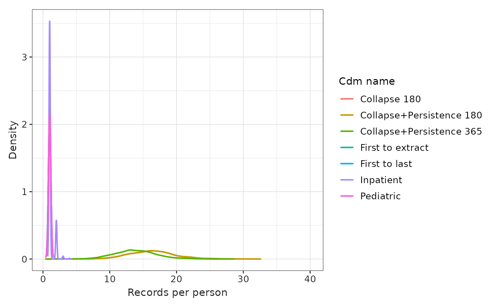
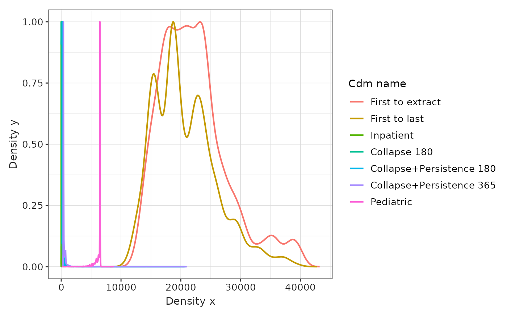
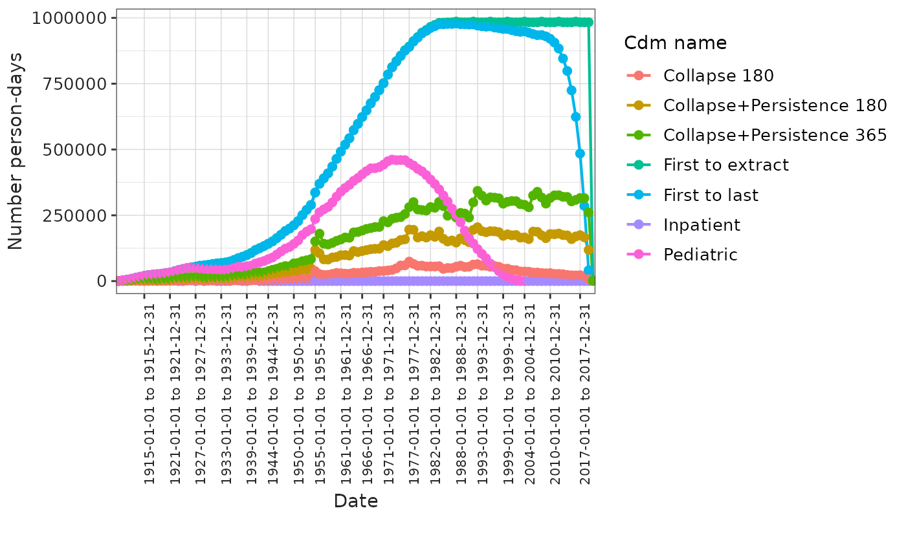
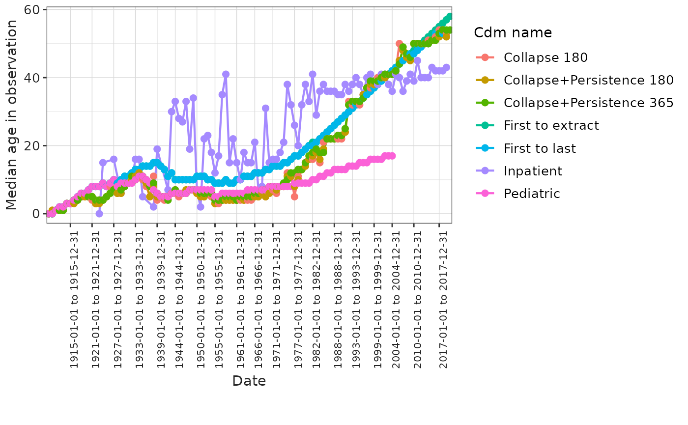

Generating the Observation Period Table
Source:vignettes/buildObservationPeriod.Rmd
buildObservationPeriod.RmdIntroduction
The observation_period
table is a central component of the OMOP CDM.
The observation_period table contains records which define spans of time during which two conditions are expected to hold: (i) Clinical Events that happened to the Person are recorded in the Event tables, and (ii) absence of records indicate such Events did not occur during this span of time.
In practice, we summarise these two conditions by saying that a person is in observation.
Accurately defining observation period is essential for many types of studies. For example: in incidence or prevalence studies, it determines the denominator population; in survival analyses, individuals are censored once they are no longer in observation… The definition of observation period can therefore strongly influence study results [CITE].
For primary care or claims data, defining observation is relatively straightforward, as it can be based on enrollment and disenrollment dates. However, for datasets that only include secondary or tertiary care records, it is more complex. In these cases, the HERON-UK network recommends assigning a single observation period per person, starting from their first record in the database (e.g., first hospital visit) and ending at the earliest of: (1) the patient’s death date; (2) a censoring age (commonly 120 years, but this may vary depending on the data source); or (3) a censoring date (typically the data extraction date).1
In this vignette, we will illustrate several approaches to defining the observation period:
- First to extraction: one observation period per person from first record to extraction date.
- First to last: one observation period per person from first record to last record in the database.
- Inpatient: individuals are in observation while they have an ongoing visit.
- Collapse 180: individuals are in observation while they have an ongoing record, different records are collapsed using a window of 180 days.
- Collapse+Persistence 180: individuals are in observation while they have an ongoing record, different records are collapsed using a window of 180 days, a persistence window of 179 days is added at the end of each observation period.
- Collapse+Persistence 365: individuals are in observation while they have an ongoing record, different records are collapsed using a window of 365 days, a persistence window of 364 days is added at the end of each observation period.
- Pediatric: one observation period per person from first record to extraction date or 18th birthday of the individual.
To demonstrate these definitions, we will use a toy example
containing 3 visit records (visit_occurrence) and 5 drug
records (drug_exposure). These are shown in Figure @ref(fig:fig-toy), where visits are shown in
blue and drug exposures in green.
Representation of a synthetic patient records.
Now we can built our 7 definitions of the observation period as seen in Figure @ref(fig:fig-obs). The inpatient definition is the most restrictive one and 3 observation periods are created one per each inpatient episode, on the other hand the ‘First to extraction’ (1) and ‘Collapse+Persistence 365’ (6) are the one generating a longer period of observed time. Note also that all individuals observation period are censored at extraction date at the latest.
Different observation periods.
In the next section we will see how to built those observation periods in a synthetic database.
Build observation_period table in GiBleed
Now that we have seen the importance of the observation period definition we will see how to built it in a synthetic dataset. For the purpose of this example we will use the (GiBleed) dataset available using omock.
library(omock)
library(OmopConstructor)
library(OmopSketch)
library(dplyr, warn.conflicts = FALSE)
library(ggplot2)
library(visOmopResults)
cdm <- mockCdmFromDataset(datasetName = "GiBleed", source = "duckdb")
#> ℹ Reading GiBleed tables.
#> ℹ Adding drug_strength table.
cdm
#>
#> ── # OMOP CDM reference (duckdb) of GiBleed ────────────────────────────────────
#> • omop tables: care_site, cdm_source, concept, concept_ancestor, concept_class,
#> concept_relationship, concept_synonym, condition_era, condition_occurrence,
#> cost, death, device_exposure, domain, dose_era, drug_era, drug_exposure,
#> drug_strength, fact_relationship, location, measurement, metadata, note,
#> note_nlp, observation, observation_period, payer_plan_period, person,
#> procedure_occurrence, provider, relationship, source_to_concept_map, specimen,
#> visit_detail, visit_occurrence, vocabulary
#> • cohort tables: -
#> • achilles tables: -
#> • other tables: -This dataset has the observation_period table already
populated, but we will create it again using the 7 definitions that we
have seen in the section above. Note the cdm is inserted in
a duckdb connection so we simulate
for a real case where we have the data in a database.
The observation_period table will be built using the buildObservationPeriod()
function and we will parametrise it in different ways for each case.
Later we will summarise it using OmopSketch so we can
compare the different definitions at the end.
For all the definitions of observation period we will use
censorAge = 120 and
dateRange = as.Date(c("1900-01-01", "2020-01-01")). Note
also that if a death record is in the database the person will
automatically be censored that day. Unless otherwise specified by
adjusting the recordsFrom argument, records contributing to
the observation period are searched for in the following tables:
drug_exposure and visit_occurrence.
First to extraction
To build observation period that span from the first record to the
data extraction we will need to set the collapseDays and
persistenceDays to Inf as we want to span the
observation period till the extraction of data.
cdm <- buildObservationPeriod(
cdm = cdm,
collapseDays = Inf,
persistenceDays = Inf,
censorAge = 120,
dateRange = as.Date(c("1900-01-01", "2020-01-01"))
)
# summarise the generated observation_period using OmopSketch
result1a <- summariseObservationPeriod(observationPeriod = cdm$observation_period,
byOrdinal = FALSE)
result1b <- summariseInObservation(observationPeriod = cdm$observation_period,
interval = "years",
output = c("person-days", "age"))
#> ℹ The following estimates will be computed:
#> • age: median
#> → Start summary of data, at 2025-10-07 14:13:37.186721
#>
#> ✔ Summary finished, at 2025-10-07 14:13:37.274001
#> ℹ The following estimates will be computed:
#> • age: median
#> → Start summary of data, at 2025-10-07 14:13:39.031062
#>
#> ✔ Summary finished, at 2025-10-07 14:13:39.172051
# change cdm_name to identify the different results objects
result1 <- bind(result1a, result1b) |>
mutate(cdm_name = "First to extract")First to last
To built observation period that span from the first record to the
last record extraction we will need to set the collapseDays
to Inf and persistenceDays to 0
as we do not want to add any time after the last record. This
observation period definition can be problematic as observation periods
change retrospectively in each data extraction and toward the end of
observation you end up with a more sick population being in
observation.
cdm <- buildObservationPeriod(
cdm = cdm,
collapseDays = Inf,
persistenceDays = 0,
censorAge = 120,
dateRange = as.Date(c("1900-01-01", "2020-01-01"))
)
# summarise the generated observation_period using OmopSketch
result2a <- summariseObservationPeriod(observationPeriod = cdm$observation_period,
byOrdinal = FALSE)
result2b <- summariseInObservation(observationPeriod = cdm$observation_period,
interval = "years",
output = c("person-days", "age"))
#> ℹ The following estimates will be computed:
#> • age: median
#> → Start summary of data, at 2025-10-07 14:13:43.014273
#>
#> ✔ Summary finished, at 2025-10-07 14:13:43.107932
#> ℹ The following estimates will be computed:
#> • age: median
#> → Start summary of data, at 2025-10-07 14:13:44.753803
#>
#> ✔ Summary finished, at 2025-10-07 14:13:44.883786
# change cdm_name to identify the different results objects
result2 <- bind(result2a, result2b) |>
mutate(cdm_name = "First to last")Inpatient
To built observation period for the inpatient episodes we will set
the collapseDays and persistenceDays to
0 as we do not want to collapse or add any time after the
records. We will also have to specify that we only want to use data in
the visit_occurrence table, we will do that using the
recordsFrom argument
(recordsFrom = visit_occurrence). This would result in most
people having multiple observation periods, with each period duration
being relatively short. This is not a good option to use if you want to
calculate incidence or prevalence, as it will result in an unreliable
denominator.
cdm <- buildObservationPeriod(
cdm = cdm,
collapseDays = 0,
persistenceDays = 0,
censorAge = 120,
dateRange = as.Date(c("1900-01-01", "2020-01-01")),
recordsFrom = "visit_occurrence"
)
#> ℹ `persistenceDays` (0) can not be equal to `collapseDays` (0) as back to back
#> observation periods are not allowed, setting `collapseDays = 1`.
# summarise the generated observation_period using OmopSketch
result3a <- summariseObservationPeriod(observationPeriod = cdm$observation_period,
byOrdinal = FALSE)
result3b <- summariseInObservation(observationPeriod = cdm$observation_period,
interval = "years",
output = c("person-days", "age"))
#> ℹ The following estimates will be computed:
#> • age: median
#> → Start summary of data, at 2025-10-07 14:13:48.875105
#>
#> ✔ Summary finished, at 2025-10-07 14:13:48.956658
#> ℹ The following estimates will be computed:
#> • age: median
#> → Start summary of data, at 2025-10-07 14:13:50.282261
#>
#> ✔ Summary finished, at 2025-10-07 14:13:50.394297
# change cdm_name to identify the different results objects
result3 <- bind(result3a, result3b) |>
mutate(cdm_name = "Inpatient")Collapse 180
To collapse records separated by 180 days we will use the
collapseDays argument (collapseDays = 180) and
set persistenceDays to 0 as we add any time
after the records.
cdm <- buildObservationPeriod(
cdm = cdm,
collapseDays = 180,
persistenceDays = 0,
censorAge = 120,
dateRange = as.Date(c("1900-01-01", "2020-01-01"))
)
# summarise the generated observation_period using OmopSketch
result4a <- summariseObservationPeriod(observationPeriod = cdm$observation_period,
byOrdinal = FALSE)
result4b <- summariseInObservation(observationPeriod = cdm$observation_period,
interval = "years",
output = c("person-days", "age"))
#> ℹ The following estimates will be computed:
#> • age: median
#> → Start summary of data, at 2025-10-07 14:13:54.744977
#>
#> ✔ Summary finished, at 2025-10-07 14:13:54.830476
#> ℹ The following estimates will be computed:
#> • age: median
#> → Start summary of data, at 2025-10-07 14:13:56.40212
#>
#> ✔ Summary finished, at 2025-10-07 14:13:56.514404
# change cdm_name to identify the different results objects
result4 <- bind(result4a, result4b) |>
mutate(cdm_name = "Collapse 180")Collapse+Persistence 180
To collapse records separated by 180 days we will use the
collapseDays argument (collapseDays = 180),
this time we will set persistenceDays to 179
as we want to add 179 days after any record. Note
persistenceDays and collapseDays can not be
the same because back to back observation periods are not
allowed.
cdm <- buildObservationPeriod(
cdm = cdm,
collapseDays = 180,
persistenceDays = 179,
censorAge = 120,
dateRange = as.Date(c("1900-01-01", "2020-01-01"))
)
# summarise the generated observation_period using OmopSketch
result5a <- summariseObservationPeriod(observationPeriod = cdm$observation_period,
byOrdinal = FALSE)
result5b <- summariseInObservation(observationPeriod = cdm$observation_period,
interval = "years",
output = c("person-days", "age"))
#> ℹ The following estimates will be computed:
#> • age: median
#> → Start summary of data, at 2025-10-07 14:14:00.920279
#>
#> ✔ Summary finished, at 2025-10-07 14:14:01.005507
#> ℹ The following estimates will be computed:
#> • age: median
#> → Start summary of data, at 2025-10-07 14:14:02.621408
#>
#> ✔ Summary finished, at 2025-10-07 14:14:02.741194
# change cdm_name to identify the different results objects
result5 <- bind(result5a, result5b) |>
mutate(cdm_name = "Collapse+Persistence 180")Collapse+Persistence 365
In this case we will set arguments to 365 and
364 analogously to the previous definition.
cdm <- buildObservationPeriod(
cdm = cdm,
collapseDays = 365,
persistenceDays = 364,
censorAge = 120,
dateRange = as.Date(c("1900-01-01", "2020-01-01"))
)
# summarise the generated observation_period using OmopSketch
result6a <- summariseObservationPeriod(observationPeriod = cdm$observation_period,
byOrdinal = FALSE)
result6b <- summariseInObservation(observationPeriod = cdm$observation_period,
interval = "years",
output = c("person-days", "age"))
#> ℹ The following estimates will be computed:
#> • age: median
#> → Start summary of data, at 2025-10-07 14:14:07.213416
#>
#> ✔ Summary finished, at 2025-10-07 14:14:07.297559
#> ℹ The following estimates will be computed:
#> • age: median
#> → Start summary of data, at 2025-10-07 14:14:08.818659
#>
#> ✔ Summary finished, at 2025-10-07 14:14:08.934879
# change cdm_name to identify the different results objects
result6 <- bind(result6a, result6b) |>
mutate(cdm_name = "Collapse+Persistence 365")Pediatric
In this case we will use the same definition that we used for (First
to extraction) but we will set up the censorAge argument to
18 as we want to simulate a database with pediatric data where we loose
followup after the patient turns 18 as they are moved to other
specialised cares.
cdm <- buildObservationPeriod(
cdm = cdm,
collapseDays = Inf,
persistenceDays = Inf,
censorAge = 18,
dateRange = as.Date(c("1900-01-01", "2020-01-01"))
)
# summarise the generated observation_period using OmopSketch
result7a <- summariseObservationPeriod(observationPeriod = cdm$observation_period,
byOrdinal = FALSE)
result7b <- summariseInObservation(observationPeriod = cdm$observation_period,
interval = "years",
output = c("person-days", "age"))
#> ℹ The following estimates will be computed:
#> • age: median
#> → Start summary of data, at 2025-10-07 14:14:12.437712
#>
#> ✔ Summary finished, at 2025-10-07 14:14:12.514194
#> ℹ The following estimates will be computed:
#> • age: median
#> → Start summary of data, at 2025-10-07 14:14:13.897656
#>
#> ✔ Summary finished, at 2025-10-07 14:14:14.001642
# change cdm_name to identify the different results objects
result7 <- bind(result7a, result7b) |>
mutate(cdm_name = "Pediatric")Comparison of the different definitions
We can easily merge the different results into a single result object
using the bind()
function.
result <- bind(result1, result2, result3, result4, result5, result6, result7)If we compare the overall statistics of the observation period:
tableObservationPeriod(result)| Observation period ordinal | Variable name | Estimate name |
CDM name
|
||||||
|---|---|---|---|---|---|---|---|---|---|
| First to extract | First to last | Inpatient | Collapse 180 | Collapse+Persistence 180 | Collapse+Persistence 365 | Pediatric | |||
| all | Number records | N | 2,694 | 2,694 | 1,037 | 43,827 | 43,827 | 37,230 | 2,691 |
| Number subjects | N | 2,694 | 2,694 | 890 | 2,694 | 2,694 | 2,694 | 2,691 | |
| Records per person | mean (sd) | 1.00 (0.00) | 1.00 (0.00) | 1.17 (0.41) | 16.27 (3.55) | 16.27 (3.55) | 13.82 (3.17) | 1.00 (0.00) | |
| median [Q25 - Q75] | 1 [1 - 1] | 1 [1 - 1] | 1 [1 - 1] | 16 [14 - 18] | 16 [14 - 18] | 14 [12 - 16] | 1 [1 - 1] | ||
| Duration in days | mean (sd) | 22,113.65 (5,650.39) | 20,638.39 (5,163.38) | 2.26 (0.72) | 64.24 (369.09) | 243.24 (369.09) | 486.42 (445.34) | 6,259.75 (555.77) | |
| median [Q25 - Q75] | 21,372 [17,929 - 24,705] | 19,332 [16,404 - 23,663] | 2 [2 - 2] | 15 [1 - 31] | 194 [180 - 210] | 379 [365 - 473] | 6,476 [6,305 - 6,477] | ||
| Days to next observation period | mean (sd) | - | - | 8,254.63 (6,124.99) | 1,284.26 (1,193.62) | 1,105.26 (1,193.62) | 1,113.77 (1,209.43) | - | |
| median [Q25 - Q75] | - | - | 6,531 [3,540 - 12,747] | 883 [444 - 1,706] | 704 [265 - 1,527] | 733 [298 - 1,535] | - | ||
We can see that definitions (1), (2) and (7) lead to a one observation period per person by definition. The Collapse 180 (4) and Collapse+Persistence180 (5) lead to the same number of observation periods but with different durations. We can take a better look to this statistics looking at the plots:
plotObservationPeriod(result = result,
variableName = "Records per person",
plotType = "densityplot",
colour = "cdm_name") +
ggplot2::coord_cartesian(xlim = c(NA, 40))
As expected for example we can see that using a window of 180 creates more observation periods that using the 365 collapse window, this is expected, the bigger the window the less observation periods we will have.
Now taking a look at the length of the observation periods, to make the plot more clear we will renomalise to a maximum of 1 so we can see the different densities side by side:
result |>
filterSettings(result_type == "summarise_observation_period") |>
filter(
variable_name == "Duration in days",
estimate_name %in% c("density_x", "density_y")
) |>
tidy() |>
mutate(cdm_name = factor(cdm_name, levels = unique(cdm_name))) |>
group_by(cdm_name) |>
mutate(density_y = density_y / max(density_y)) |>
ungroup() |>
scatterPlot(
x = "density_x",
y = "density_y",
line = TRUE,
point = FALSE,
ribbon = FALSE,
colour = "cdm_name"
)
As we can see the Collapse, persistent and Inpatient approaches generate short observation periods, in the pediatric approach most of the individuals are censored at their 18th birth day and as in GiBleed we have many individuals contributing since their birth date we have a peak at ~6574 days. ‘First to extract’ and ‘First to last’ show similar time distributions with higher times for the ‘First to extract’ approach.
Now we can compare the amount of person-days in observation for each one of the observation period definitions, note this would be the denominator of an incidence or prevalence study.
result |>
filter(variable_name == 'Number person-days') |>
plotInObservation(colour = "cdm_name")
#> `result_id` is not present in result.
#> `result_id` is not present in result.
In this plot there are some trends worth remarking:
A larger gap increases the observation time (green vs yellow)
Adding a persistence window increases quite a bit the observable time (red vs green)
Using the first to last approach lead to less individuals being in observation towards the end of the observation window.
Finally, to show more in depth the findings we can see the evolution of the median age of the individuals in observation:
result |>
filter(variable_name == 'Median age in observation') |>
plotInObservation(colour = "cdm_name")
#> `result_id` is not present in result.
#> `result_id` is not present in result.
In this case we see that the pediatric population always has a lower median age as individuals are censored when they turn 18. Due to GiBleed nature we do not see other trends that we see in real world data like older population in observation the lower the collapse window is, sicker and older population for the inpatient definition, or sicker population at the closer you get to the extraction date for the ‘First to last’ definition.
TODO: Add citation to the observation period methods paper when ready. TODO: Invite collaborators to submit their results and have a shiny with the comparison and impact of the decision in different datasets.
Final remarks
As seen, the observation period table is key and has a significant impact on many studies. Therefore, defining the observation period must be done carefully, with full awareness of the limitations associated with each approach. The most appropriate observation period often varies from study to study. This is where OmopConstructor becomes especially valuable, as it allows users to define custom observation periods on a study-by-study basis.
Note: For database back-end cdms note the
observation_periodtable is generated in thewriteSchema. If you want to use it to generate theobservation_periodin thecdmSchemayou will need to use thewriteSchema = cdmSchemaand have writing permissions in thecdmSchema.